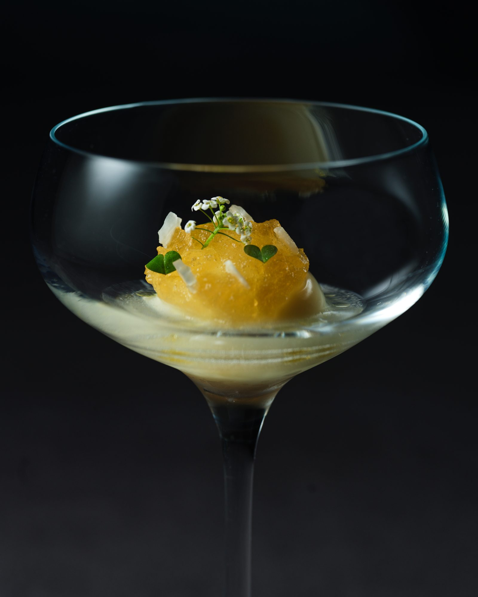
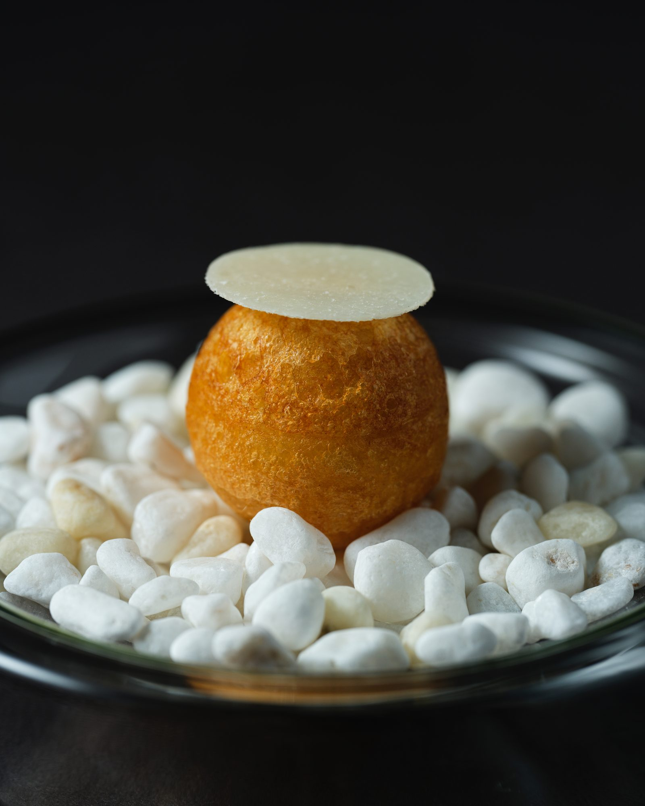
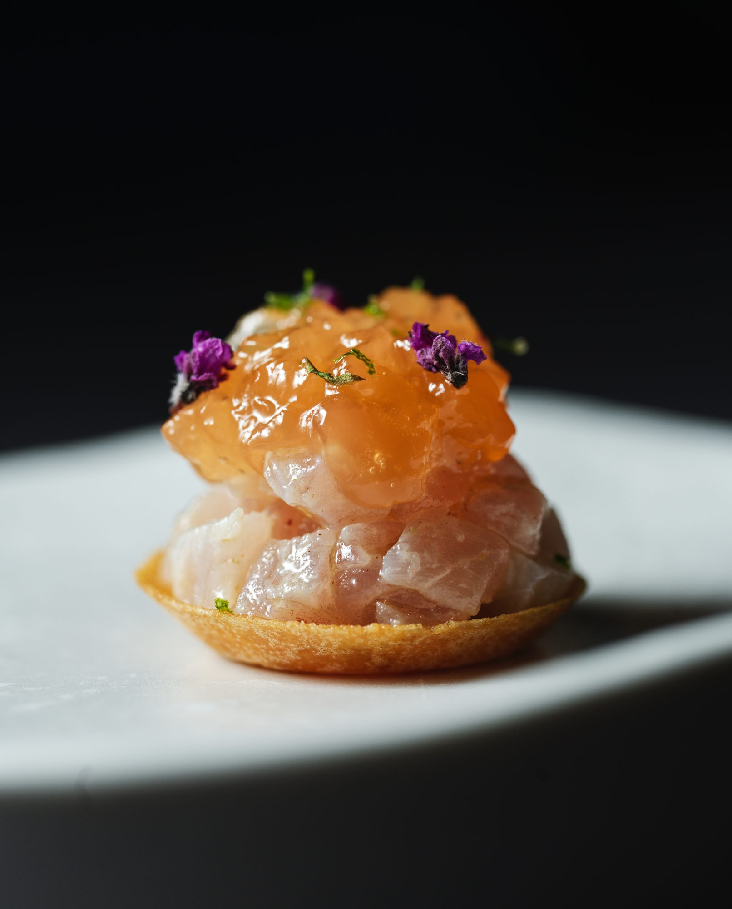
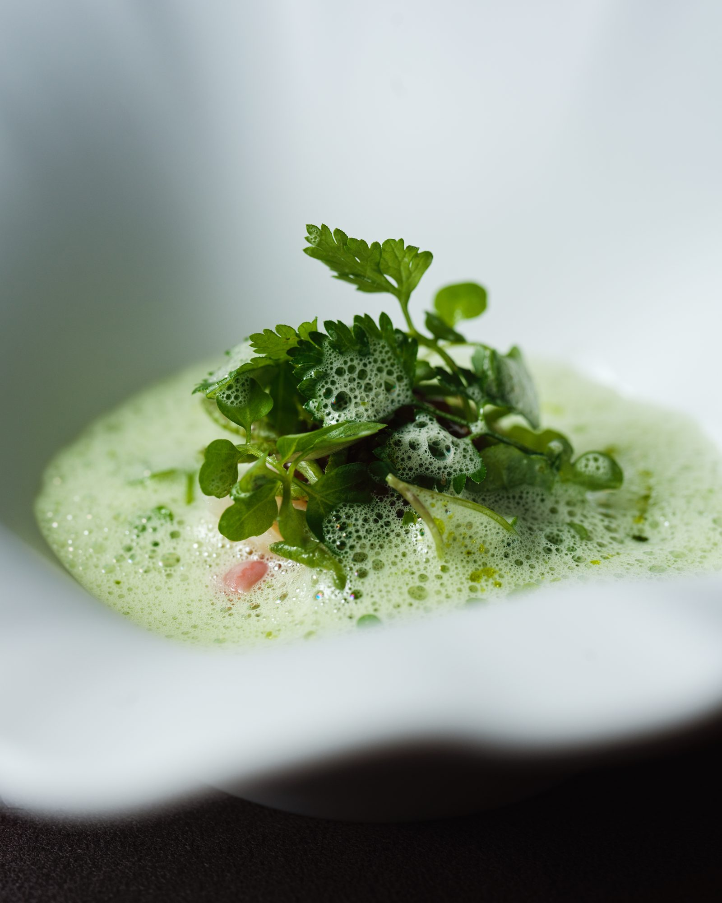
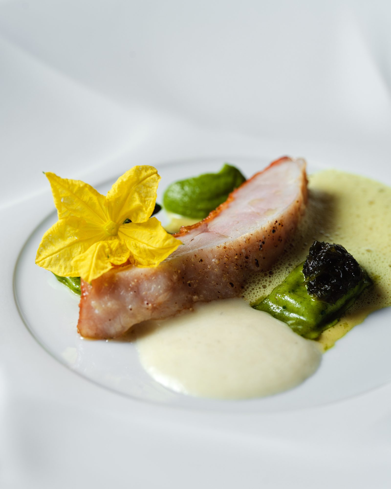
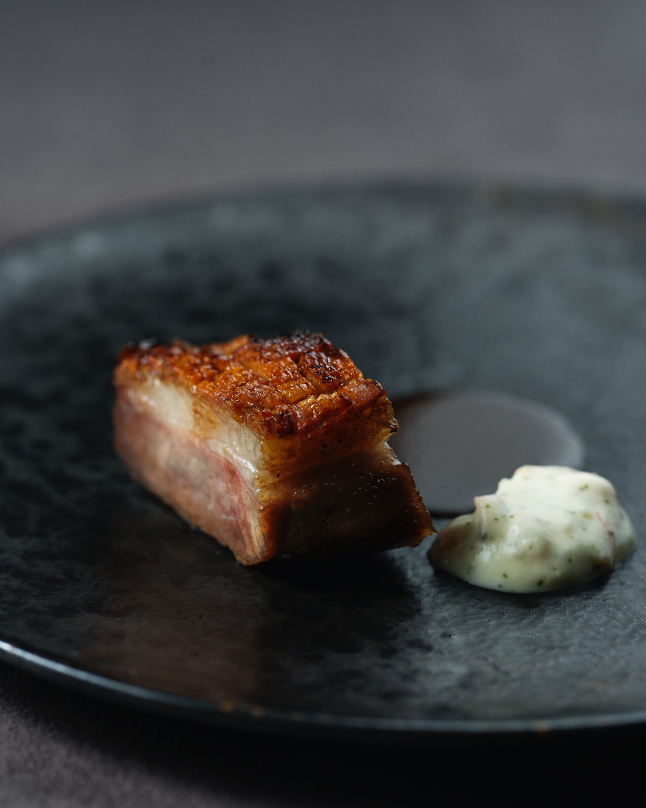
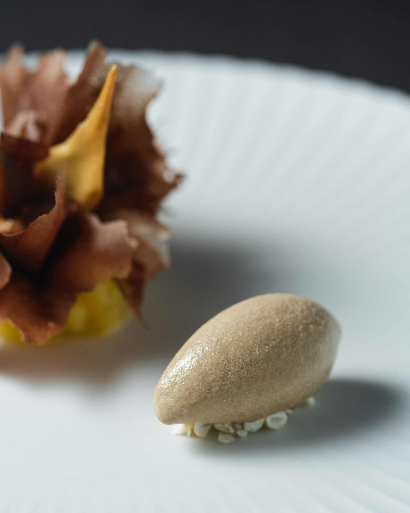
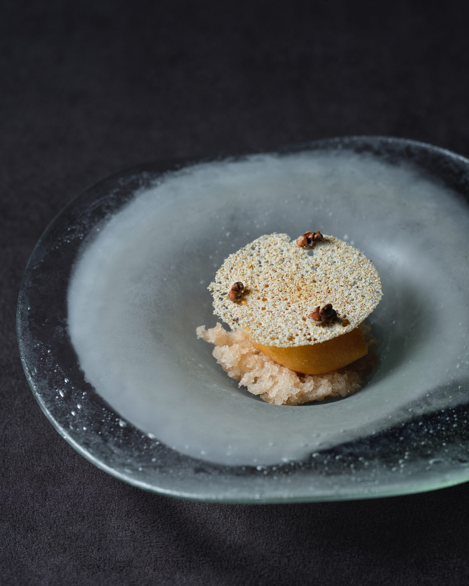

Cuisine
像一本繪本，這裡的頁面不隨季節更換。
de nuit 以八道與十道菜的套餐，書寫法式傳統與季節的對話——留在這幾頁上的，只有代表作。當季的新作像廚房寄出的信，住在 Instagram。








Menu
週五・週六供應11:30 – 15:00・最後入座 12:15
週二至週六供應18:00 – 22:30・最後入座 19:30八道／十道菜
侍酒師精選佐餐亦備無酒精創作飲品